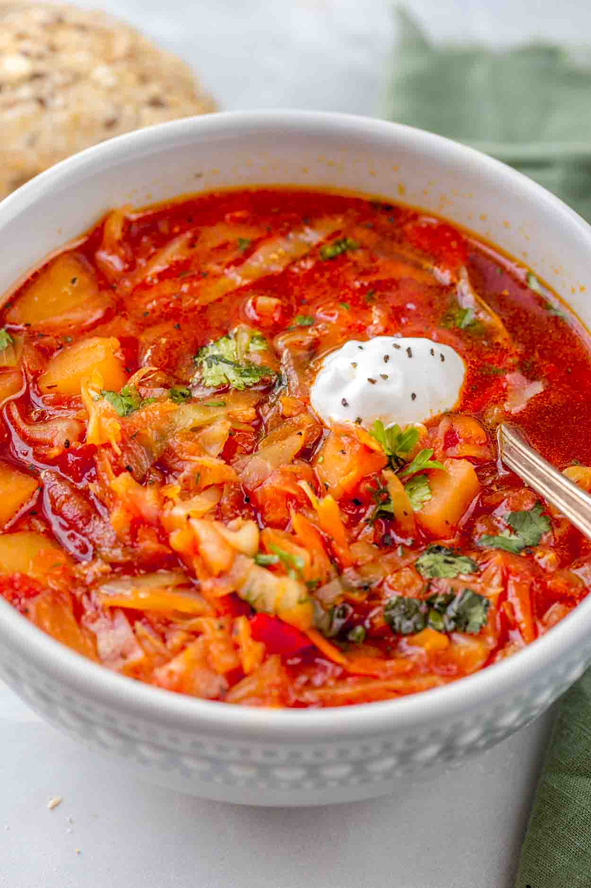

Borsch (Russian Beet Soup)

Back
Description
Borsch is a classic Eastern European soup made primarily out of beets, potatoes and cabbage.
Each country has their unique ways of making this hearty soup. Below is the Russian version of
the soup. Top with sour cream and dill is the best way to go.
Ingredients
- 2-3 Large Beets, shredded or finely chopped
- 3 Potatoes, diced
- Half a head of cabbage, thinly chopped
- 2 Carrots, shredded or finely chopped
- 1 onion, diced
- Minced garlic
- 2 tbsp tomato paste
- Lemon juice
- 8 cups vegetable broth, 2 cups of water
- Salt and pepper to taste
- Chopped dill
- Sour cream for garnish
Steps
- Prep and shred beets, cabbage, and carrots. Chop onion and garlic finely. Dice potatoes.
- In a large pot bring water to boil and start cooking potatoes on medium heat.
- In a sauce pan on medium-high heat start cooking onions, and once transluscent add garlic.
- Once cooked, (around 10 min) add carrots and cook all together on pan. Set aside after 5 min.
- Place beets on sauce pan with medium-high heat and start cooking. Add a squeeze of lemon juice.
After cooking for around 5-10 min., add tomato paste to beets and mix thoroughly.
- Potatoes should be almost or fully cooked. On medium heat, add all vegetable broth. Add in the onion and carrot mixture to the pot. Mix.
- Then, add beets mixture to the pot. Mix and then add in shredded cabbage.
- Let simmer on low for 10 min all together.
- Add salt and pepper to your personal preference.
- Add chopped dill to pot and mix.
- Serve in bowls and add more chopped dill and dollop of sour cream for topping.
- Serve with black rye bread and green onion on the side.